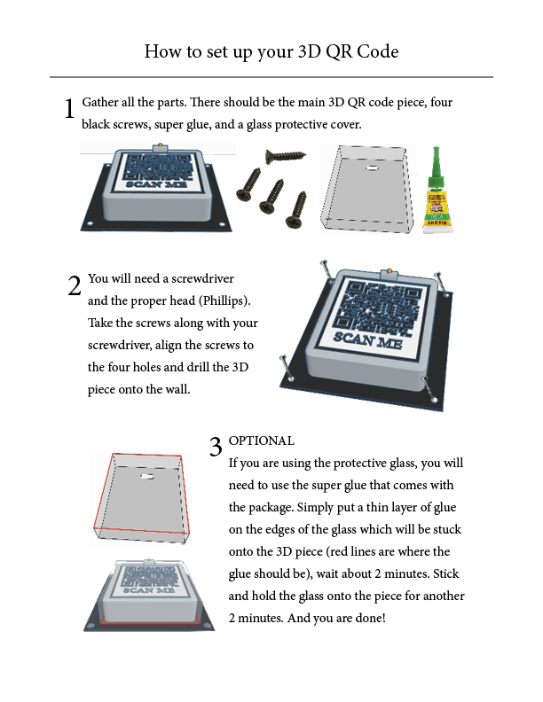

The goal of this group project was to add on to speculative design one. We were to keep our previous design within the boundaries of the assignment and BIA's objective. Our problem, users, and question remained the same. However, this time we were to add another electronic component to our design as well as connect it to the Internet of Things (IoT).

Tinkercad.
Adobe Illustrator.
Adobe InDesign.
Businesses are have difficulty connecting with the local communit of downtown Brantford.
Brantford citizens: How can I find the right business for my needs?
Brantford businesses: How can we reach the community more effectively?
How might we utilize accessible and multisensorial technology to engage the Brantford community with local businesses?
Each downtown Brantford business would have a 3D QR code mounted to their wall (outside, inside, or both). When scanned, it would lead the user to the businesses' website or whatever platform the business chooses to send the user.
The high-budget version: a digital screen on a 3D model displaying the QR code, along with a motion detection sensor.
The low-budget version: a vinyl sticker on a 3D model displaying the QR code.
If the business has an issue with the cost of the high-budget version, they can choose the alternative which is just as effective, but without those extra digital perks.
Our group worked together over the course of one month to create accurate visuals of our vision for this project.
Below you can see the 3D QR code prototype which would be mounted on the business wall (outside, inside, or both). This is our high-budget option. As you can see, we made some improvements from SDP1 and thought of more details if this were to ever go into production.
The 3D piece is stuck to a back panel which has four holes that the screws would fit into so that it can be easily and securely mounted to a wall. In addition, we have added a glass panel which protects the digital screen against any damage or vandalism.
The motion sensor you see above the digital QR code screen will detect any movement which will turn the screen on and create a *ding* sound to attract people to it. The sensor also pokes out of the glass to allow for more effective detection.
To the left, you can see the prototype without the glass layer, and to the right you can see it with the glass layer.
Below you can see the 3D QR code prototype which would be mounted to the business wall (outside, inside, or both). This is our low-budget option. This option does not include the motion sensor or the digital screen, but it includes a vinyl sticker which is stuck on to the 3D box. Vinyl stickers are known to be quite resistant against any weather such as rain and snow, and most vandalism will be easy to wipe off.
To the left, you can see the prototype without the glass layer, and to the right you can see it with the glass layer.

Below you can see the instruction manual that would come with both the high-budget option and the low-budget option. Whether the business decides to go with the high-budget version or the low-budget version, each package would include the same pieces, including the glass protection layer. The main difference is the 3D piece; the high-budget option would include the 3D piece with the sensor and digital screen, whereas the low-budget option would include the 3D piece with the vinyl sticker.
Below you can see that the coupon QR code stickers hidden around the city will remain the same as from SDP1. These will be vinyl stickers.
We added another example of a QR code stick which would not be a coupon, but a code in category of volunteering or charity. This example would be linked to the Brantford Foodbank. The user who scans the code would br brought to a menu where they could choose to volunteer by clicking "Help Out" or click "Services" if they need help. Scroll down to see how that pop-up would look like.
Below you can see examples of the pop-ups and pages that the coupon QR codes above would lead the user.

✔️ Sight is engaged by the sticker code's contrast against the background or the digital screen brightness
✔️ Hearing is engaged by the sound when the sensor detects motion and when the phone scans the code
✔️ Touch is engaged when the user touches their phone to scan
✔️ Motion is engaged when the user brings up their phone to scan
✔️ The QR code stores large amounts of information; when scanned, it leads the user to the internet
✔️ The motion sensor makes smart decisions when it detects motion (lights up, creates sound)
If we were to move on to the testing phase, we would test this speculative design by:
- Mounting a sample QR code onto a business wall
- Include an internal tracking device which counts how many times the QR code is scanned
If these statistics are high (which we speculate they will be because of our added electronic components), it will be a huge convincing factor for businesses. In addition, it would be mentioned that their website would recieve more traffic.
Our design will bring more people to downtown Brantford businesses and create a memorable experience for the community, as well as bring more technology to these businesses. 😀
Here is our slideshow presentation for reference: